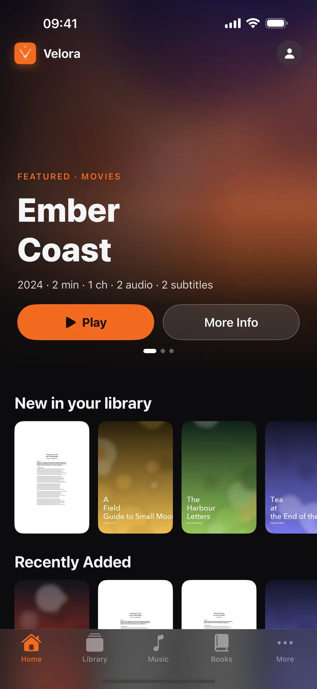
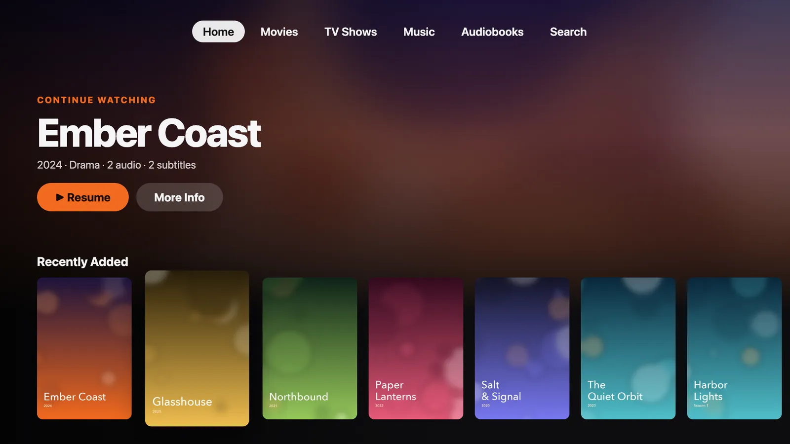
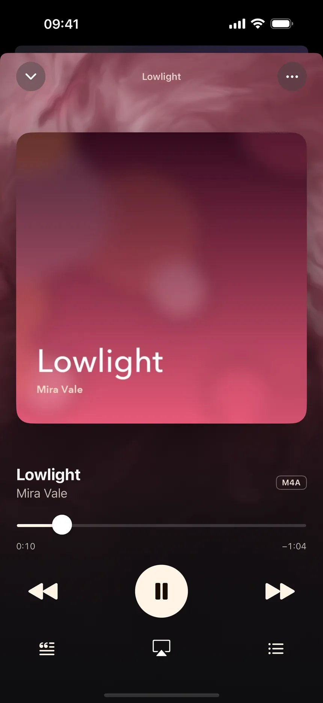
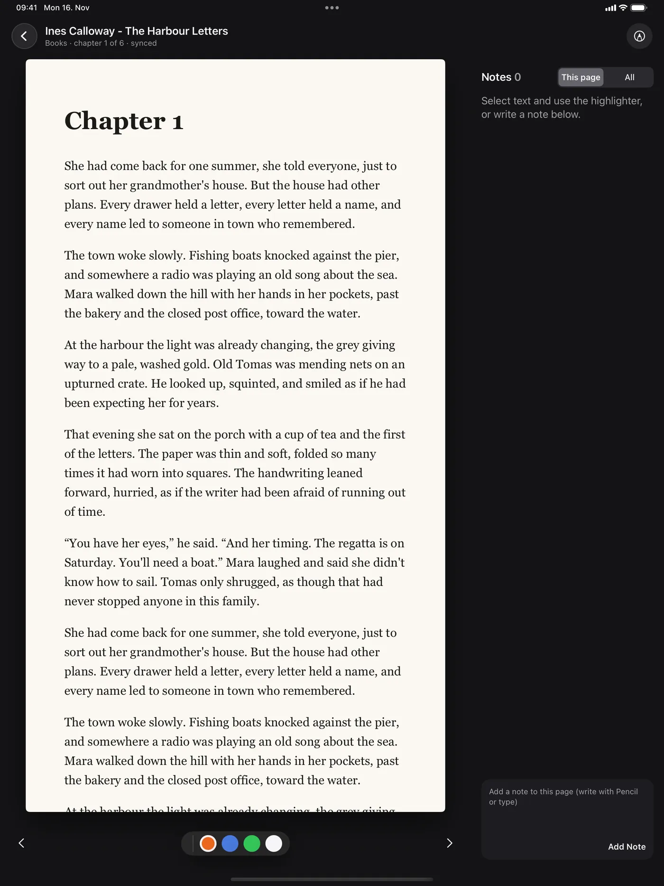
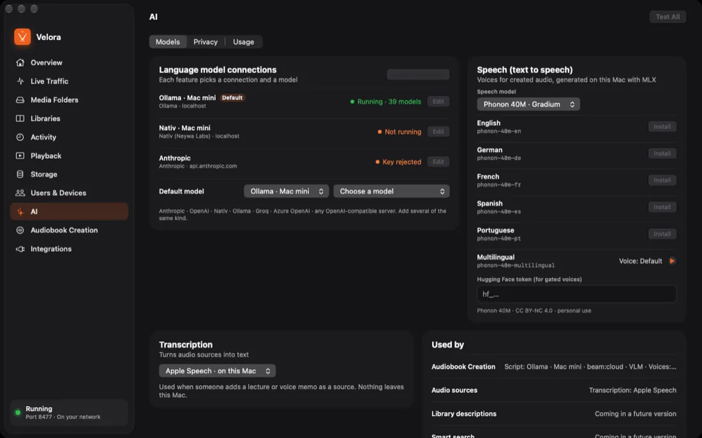

Your media. Your Mac. Everywhere.
Velora turns the Mac you already own into a private media server built for Apple silicon. Movies, shows, music, audiobooks, books, manga, papers and sheet music play beautifully on every Apple screen, and the AI features run on your Mac with MLX. No cloud account, no subscription to someone else's servers.
Velora Server 2.6.31 · Apple silicon · macOS 26 or later · Notarized by Apple
Apps for iPhone, iPad, Mac, Apple TV and Vision Pro are in TestFlight beta. English, Deutsch, 日本語.


One library, every Apple device.
Real screenshots from the apps, running against a sample library made for this site. Screens marked Preview are designs for features that are still being finished.
iPhone
iPad

Web app
Mac server app

Apple TV

CarPlay

Movies and shows that feel native.
The player is Apple's own, with Velora's controls on top: trick-play thumbnails when you scrub, chapters, every audio and subtitle track with proper names, and skip buttons for intros, recaps and credits.
- A Next Episode button whenever you want to move on, and auto-play with a countdown, Watch Credits and “Are you still watching?”
- Skip intros and credits automatically and play the next episode: each person's own choice, saved to their account on every device
- Movie versions, extras and moving backdrops; seasons and specials grouped correctly
- Picture in Picture, AirPlay and the Dynamic Island


Music with lyrics that keep time.
Now Playing fills the screen with a slow liquid smoke in the colours of the album cover and moves with the music. Lyrics scroll in time, and one cover glides between the artwork, the lyrics and the queue.
- Music home with pins and per-account playlists, with your own covers
- Album pages where the cover follows your scrolling
- Audiobooks with chapters, speed, a sleep timer and a read-along transcript


A reader that turns real pages.
New in 2.6Books open in a paged, Apple Books-style reader with themes and your choice of font. Papers open as PDFs with highlights, notes and Apple Pencil markup on iPad. Manga reads right to left, two pages at a time or as one long strip. Sheet music plays along with you.
- Themes: Auto, Original, Paper, Gray and Night
- Highlights and notes saved to your account and synced, offline first
- Download any book, paper or manga volume to read offline
- Sheet music from PDF, MusicXML and MIDI, with a following cursor, loops you drag longer or shorter, a count-in, a metronome and real instrument sounds
- Make Interactive turns PDF scores into scores that play


Make songs and audiobooks on your own Mac.
New in 2.6Music generation uses YuE2-3B, ported natively to MLX: describe a song in Simple mode, or write the style and lyrics yourself in Custom mode. Create Audio turns documents into narrated audiobooks with a named cast of voices.
- Runs on the server Mac, one job at a time, and pauses while a video streams
- Simple and Custom modes, ✦ Enhance and ✦ Write or Enhance
- Finished songs and audiobooks land in your library


A real Mac app runs it all.
Velora Server is a native macOS app. It links folders on any drive, keeps users and devices, transcodes with the Mac's hardware media engine when a device needs it, and shows what's happening in Live Traffic and Activity.
- Media folders on several drives, read only, in the layouts Jellyfin and Plex use
- Users, roles, per-library access, device sign-in that lasts, and each person's own playback settings
- AI page for EmbeddingGemma 2, YuE2-3B, narration voices, Interactive PDF Scores, instrument sounds and providers

What it does
Movies and shows
Trick-play thumbnails, chapters, every audio and subtitle track, Skip Intro, Skip Recap and Skip Credits, a Next Episode button whenever you want to move on, and auto-continue with a countdown. Your skip and autoplay choices follow you to every device.
Read more →Music
Synced lyrics, an audio-reactive Now Playing that takes its colours from the cover, pins on the Music home, and playlists for each account.
Read more →Audiobooks
Chapters, speed, 30-second skips, a sleep timer and a timed transcript you can read along with.
Read more →Paged book reader
An Apple Books-style reader for EPUB: real pages, Original, Paper, Gray and Night themes, your choice of font and spacing, highlights and notes.
Read more →Manga and papers
Right-to-left, two-page and webtoon reading for manga. Research papers grouped by subject, with Apple Pencil markup on iPad.
Read more →Sheet music
A score library for PDF, MusicXML and MIDI, laid out like Music with pins. Scores play with real instrument sounds, a following cursor, loops you drag longer or shorter, a count-in, a metronome and tempo from 25 to 150%. Mute your own part to play along, and make PDF scores interactive.
Read more →AI audio creation
Turn books, PDFs and papers into narrated audiobooks or a conversation between hosts. A named cast of voices, generated on your Mac.
Read more →Music generation
Describe a song and Velora writes and sings it with YuE2-3B on MLX. Simple mode for one line of text, Custom for your own style and lyrics.
Read more →Recommendations
EmbeddingGemma 2 runs on your Mac and reads titles, covers and now audio, so “Because you watched” and “More like this” come from your own taste.
Read more →Replay
Your year in watching, listening and reading, computed on your own server and shared with the system share sheet.
Read more →Jellyfin, Plex and Navidrome
The apps also sign in to Jellyfin, Plex and Navidrome servers and work out which one you typed. Velora Server reads Jellyfin libraries as they are: .nfo files, season folders and local art.
Read more →Multi-user
Accounts with roles and per-library access. Progress, playlists, pins, highlights, playback settings and recommendations stay separate for each person.
Read more →Downloads and offline
Download movies, episodes, music, audiobooks, books, papers and manga. Highlights and notes sync when you are back online.
Read more →English, German, Japanese
Every app, the web app and the server speak three languages, and follow your device's language automatically.
Read more →Private by design
No Velora cloud, no telemetry, no account with us. Your media and history stay on your Mac. Velora never writes to your media folders.
Read more →Everything runs on your Mac.
Recommendations, narration, music generation and library cleanup run on your own Apple silicon with MLX, Apple's machine-learning framework. Your library, your history and your highlights never leave your network unless you turn on a feature that needs to.
Ready in a few minutes.
Download the server, link your folders, and open the app on your devices. Velora finds your Mac on its own.